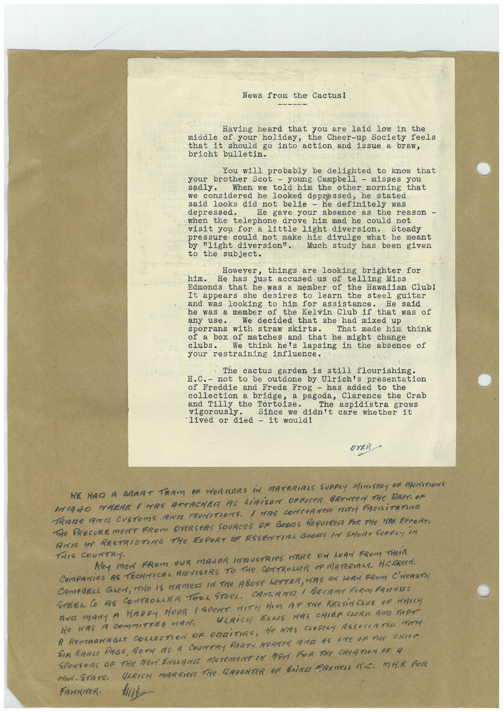

Book 1 · scan 155


Description
Transcription
Context
Review notes
Compare the machine draft with the scan. Handwriting and names need human review.
Artifacts
Edit the artifacts field in this note’s frontmatter to change these records. This summary is generated.
B01-S155-A01 — Letter & Handwritten note — Book 1, scan 155
Types: Typed document, Letter, Handwritten note
Scope: Whole scanned page; individual items can be split out during review.
Caption: Not mapped yet.
Caption source: Not recorded yet.
Caption status: unmapped
Machine transcription
News from the Cactus! Having heard that you are laid low in the middle of your holiday, the Cheer-up Society feels that it should go into action and issue a braw, bricht bulletin. You will probably be delighted to know that your brother Scot - young Campbell - misses you When we told him the other morning that we considered he looked depressed, he stated said looks did not belie - he definitely was depressed. He gave your absence as the reason - telephone drove him mad he could not visit you for a little light diversion. pressure could not make him divulge what he meant by "light diversion". Much study has been given to the subject. However, things are looking brighter for him. He has just accused us of telling Miss Edmonds that he was a member of the Hawaiian Club! It appears she desires to learn the steel guitar and was looking to him for assistance. he was a member of the Kelvin Club if that was of We decided that she had mixed up sporrans with straw skirts. That made him think of a box of matches and that he might change We think he's lapsing in the absence of your restraining influence. The cactus garden is still flourishing. H.C. - not to be outdone by Ulrich's presentation of Freddie and Freda Frog - has added to the collection a bridge, a pagoda, Clarence the Crab and Tilly the Tortoise. vigorously. The aspidistra grows Since we didn't care whether it • lived or died - it would! OVER WE NAD A GREAT TRAM OF WORKERS IN MATERIAAS SUPPLY MINISTRY OF MINITIONS IGNO MHERE / MAS ATTACHER AS LiAiSON OFFICER BETWeEN THe DEPT. OF TRAME ATTA CUSTOMS ArE MUNITIONS. / HAS CONCeRTeR VITY FACILiTATING THe PROCUREmEnT FROm OVeRSeAS SOURCeS OF GODS ReQUIRE FOR THe WAR EFFORT. ANA MA RESTRICTING THe EXPORT OF ESSENTIAL GROS IN SHORT SUPPLY iN THIS COUNTRY. Key meN FROM OUR MANOR INDUSTRIES WERe ON LOAN FROM THeiR COmPANieS AS TECHNICAL ARTISeRS TO THe CONTROLLeR OF MATeRIALS. H.C.GReEN. CAMBRELL GLeN, WHO IS NAMER IN THe ABOYE LETTER, HAS ON LOAN FROM C'HEARTH STEEL CO AS CONTRONLTER TOOL STEeL. CAMAME / BECAME FIRM FRIeNTIS AAR MANY A HARDY HOUR / SPENT WITH HIM AT THe KELiNChUB OF WHICH He WAS A CommITTEE MAN. ULRICH ELLIS WAS CHIEF CHERIS AOR KePT A RemARKABLe COLLECTION OF ORDiTIES, He WAS CLOSeLY ASSOCIATeD MITH SIR EARLe PAGE, BOTH MS A COUNTRY PARTY HORNER ARE AS ONE OF THe CHIEN SPONSORS OF THE MeN ENGARNE MOreMeNT IN NEN FOR THe CReATION OF A ren. STATe. ULRICH MARRIER THE RAVENTER OF BRINE GANNERA FC. MHR FOR FAMINER.